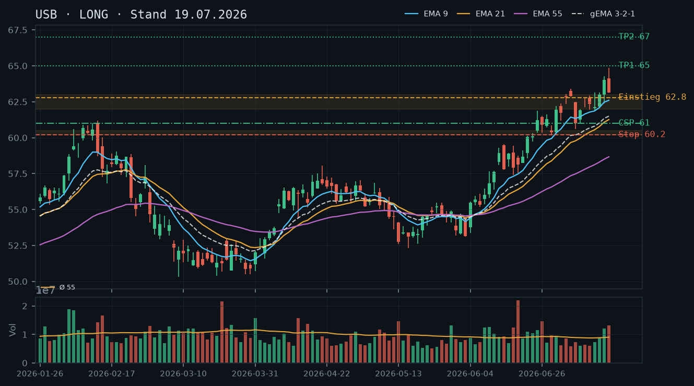
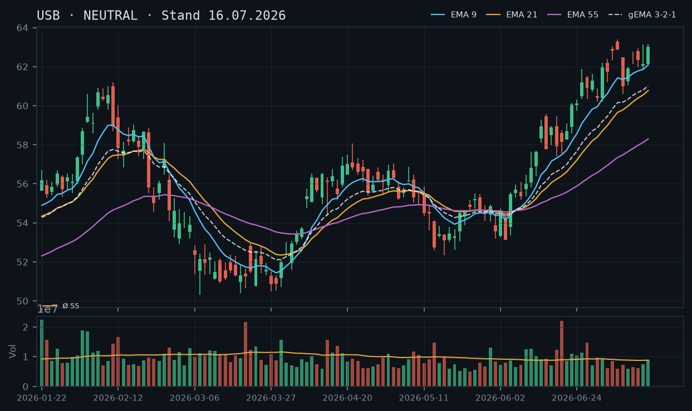
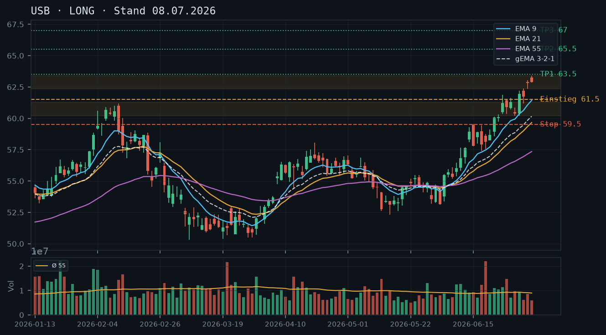

USB
Analyse-Historie · neueste zuerstUSB setzt den Aufwärtstrend nach den Q2-Earnings fort, konsolidiert eng unter dem Allzeithoch bei 64,84 auf erhöhtem Volumen – der Trend ist klar bullisch, ein CSP unterhalb der 62/61-Zone bleibt das bevorzugte Stillhalter-Setup.

1 · Trendstruktur
USB zeigt eine makellose Aufwärtsstruktur seit April: höhere Hochs und höhere Tiefs. Das Allzeithoch (in diesem Datensatz) liegt bei 64,84 vom 17.07. – der Kurs konsolidiert aktuell (63,14 / 63,71 / 64,47 / intraday 64,63) knapp darunter in einer engen Range. Der Earnings-Gap vom 16.07. (ca. 62,40–64,00) ist bisher unangefochten, kein Schlusskurs hat ihn unterschritten. Die nächste relevante Unterstützungszone liegt bei 62,00–62,40 (mehrfach getestet: Tiefs am 14.07. bei 61,83, am 08.07. bei 60,60 als tiefere Schicht). Widerstand ist das Allzeithoch bei 64,84.
2 · Candlestick-Formationen
Die letzten drei Kerzen (21.07.: +0,57, 22.07.: +0,76, 23.07. intraday positiv) zeigen einen kontrollierten Aufschwung mit höheren Schlusskursen und relativ engen Körpern – kein Exhaustion-Signal. Das Volumen der letzten drei Tage liegt mit rel_volumen 1,06–1,07 leicht über dem 55er-Schnitt, kein Blow-off. Die Konsolidierung unter 64,84 wirkt gesund: Der Markt arbeitet sich ohne Panikvolumen an das Allzeithoch heran.
3 · EMA-Lage (9 / 21 / 55)
Die EMA-Konstellation ist klar bullisch und geordnet: EMA9 (63,22) > EMA21 (61,89) > EMA55 (59,20), der gema_321-Verbund liegt bei 62,11. Der Kurs (64,47 Schluss / 64,63 intraday) handelt komfortabel über allen EMAs. Der Abstand zum EMA9 beträgt ca. 1,25 USD – eng genug, dass ein gesunder Pullback zur gema_321-Zone (ca. 62,11) möglich wäre, ohne den Trend zu brechen. Die frühere Analyse vom 08.07. (Pullback zur gema_321 als Einstiegszone) hat sich bestätigt und ist nun überholt – die aktuelle gema_321 liegt deutlich höher.
4 · Trade-Setup
| Richtung | Long |
| Einstieg | 63,00–63,20 (Limit-Buy im Pullback zum EMA9 / obere Earnings-Gap-Zone) |
| Stop | 61,80 (unter dem 14.07.-Tief und EMA9-Unterstützungszone) |
| Ziel | 67,50 (gemessen aus der Earnings-Gap-Ausdehnung / 1:1-Projektion) |
| CRV | 2.2 : 1 |
5 · Stillhalter (max. 12 Tage)
Der Trend ist klar bullisch, der Kurs handelt über allen EMAs nahe dem Allzeithoch. Ein Cash-Secured Put unterhalb der Earnings-Gap-Unterkante und der 62-er Konsolidierungszone ist das passende Werkzeug. Ein Covered Call entfällt – laut IBKR-Snapshot ist kein Aktienbestand vorhanden.
| Geschäft | Cash-Secured Put |
| Strike | 61.0 |
| Puffer | 5.6 % |
| Zone | unterhalb der Earnings-Gap-Unterkante (ca. 62,40) und des EMA21 (61,89) – Strike 61,00 liegt unterhalb beider Strukturmarken und im Bereich des vielfach bestätigten Juli-Supports (08.07.-Tief 60,60 / 30.06.-Tief 60,21) |
| Verfall bis | 2026-08-01 (9 Tage) |
| Begründung | Der Strike 61,00 bietet einen Puffer von ca. 5,6% zum aktuellen Kurs (64,63 intraday). Er liegt unterhalb des EMA21 (61,89), unterhalb der Earnings-Gap-Unterkante (ca. 62,40) und im Niemandsland vor dem Juli-Support-Cluster (60,20–60,60). Eine Andienung bei 61,00 wäre technisch vertretbar: Man akkumulierte USB in einer Zone, die mehrfach als Unterstützung funktioniert hat und klar über der April-Basis liegt. In der Optionskette zu prüfen: Prämienhöhe (mindestens 0,25–0,40 für diesen Puffer anstreben), Delta idealerweise -0,15 bis -0,20, Liquidität (Spread und Open Interest auf 61er Strike, Verfall 01.08.). Die Analyse vom 19.07. empfahl denselben Strike 61,00 – dieser bleibt valide, da sich die Unterstützungsstruktur seither nicht verändert hat. Alternativ ist ein Strike bei 60,00 (Puffer 7,2%) für konservativere Profile prüfenswert. |
Ausführliche Analyse vom 23.07.2026 anzeigen
USB – Technische Analyse & Stillhalter-Setup | 23.07.2026
1. Trendstruktur & Abgleich frühere Analysen
USB befindet sich seit April 2026 in einem makellosen primären Aufwärtstrend. Die Sequenz höherer Hochs und Tiefs ist intakt: April-Boden ~52,60 → Breakout über 57 Ende April → Konsolidierungsphase 53–56 (Mai) → Breakout-Welle ab Juni → Earnings-Spike 16.07. → aktuelles Hoch 64,84 (17.07.).
Abgleich Analyse 08.07.: Der dort formulierte Long-Trigger (Stop-Buy 61,50, Ziel 65,50) lief sauber – USB zog nach dem Tief vom 08.07. (60,60) wieder an. Das Setup ist abgearbeitet und überholt.
Abgleich Analyse 19.07.: Die bullische Einschätzung nach den Q2-Earnings wird vollumfänglich bestätigt. Der Earnings-Gap (ca. 62,40 Unterkante) ist bisher unberührt. Der empfohlene CSP-Strike 61,00 bleibt strukturell valide – die Unterstützungszone hat sich seither nicht verändert. Der angegebene Pullback-Einstieg (62,60–63,00) wurde kurzzeitig angelaufen (Tiefs 17.07.: 63,11 / 20.07.: 62,97), wurde aber nicht als klassischer Limit-Buy-Einstieg genutzt, da die Kerzen keine klare Umkehrformation zeigten.
Aktuelle Schlüsselmarken:
- Allzeithoch (Datensatz): 64,84 (17.07.) – primärer Widerstand
- Konsolidierungsrange: 62,97–64,52 (20.–22.07.) – Akkumulationszone vor weiterem Anstieg
- Earnings-Gap-Oberkante: ca. 64,00 (16.07. Close) – nun Support
- Earnings-Gap-Unterkante: ca. 62,40 (15.07. High) – kritische Unterstützung
- EMA21-Zone: 61,89 – dynamischer Support
- Juli-Support-Cluster: 60,20–60,60 (30.06.-Tief / 08.07.-Tief) – mehrfach bestätigt
2. Candlestick-Formationen
Die letzten fünf Tageskerzen (17.–22.07.) zeichnen ein konstruktives Bild: Nach dem Earnings-Hoch bei 64,84 gab es zwei Kerzen (17.07. und 20.07.) mit identischem Schluss bei 63,14 – ein seltenes Doppelboden-Signal auf Tagesbasis, das auf Absorption von Verkäufern hindeutet. Die Kerzen 21.07. (+0,57) und 22.07. (+0,76) zeigen anschließend erneute Stärke mit Schlusskursen über dem Eröffnungskurs. Kein Erschöpfungssignal (kein langer oberer Docht bei hohem Volumen, keine Bearish Engulfing). Die enge Konsolidierung unter dem Allzeithoch bei normalem Volumen (rel_volumen 1,06–1,27) ist bullisch zu interpretieren – kein Distribution-Muster.
3. EMA-Analyse
Die EMA-Konstellation ist in Lehrbuch-Bullish-Reihenfolge: EMA9 (63,22) über EMA21 (61,89) über EMA55 (59,20). Der gewichtete gema_321-Verbund bei 62,11 steigt steil an und bestätigt die Trenddynamik. Der Kurs (64,47 Schluss / 64,63 intraday) liegt ca. 1,25 USD über dem EMA9 – das ist eine moderate, nicht überhitzte Extension. Ein Rücksetzer zum EMA9 (~63,20) wäre gesund und bietet Long-Einstieg A. Ein tieferer Pullback zum gema_321 (~62,11) wäre Long-Einstieg B. Beide Szenarien würden den Trend nicht gefährden, solange der EMA21 (61,89) als Support hält.
4. Trade-Setups (Aktie)
Setup A – Pullback zum EMA9 (bevorzugt):
- Einstieg: 63,00–63,20 (Limit, Bereich EMA9)
- Stop: 61,80 (unter EMA21 und Earnings-Gap-Oberkante-Unterstützung)
- Ziel 1: 65,00 (Allzeithoch-Bereich) → CRV ca. 1,3:1
- Ziel 2: 67,50 (1:1-Projektion aus Earnings-Gap-Ausdehnung) → CRV ca. 2,2:1
Setup B – Pullback zum gema_321 / Earnings-Gap-Unterkante:
- Einstieg: 62,00–62,40 (Limit, Konfluenz gema_321 und Gap-Unterkante)
- Stop: 61,20 (klarer Bruch unter EMA21 und Gap-Close)
- Ziel 1: 65,00 → CRV ca. 2,3:1
- Ziel 2: 67,50 → CRV ca. 4,4:1
Setup C – Breakout über Allzeithoch (aggressiv):
- Einstieg: Stop-Buy bei 64,90 (über 64,84)
- Stop: 63,10 (unter Konsolidierungs-Support)
- Ziel: 67,50 → CRV ca. 1,4:1
- Hinweis: Erst nach klarem Tagesschluss über 64,84 relevant
5. Stillhalter-Analyse (Schwerpunkt)
Cash-Secured Put – Strike 61,00, Verfall 01.08.2026
Zonen-Herleitung: Der Strike 61,00 liegt unterhalb von vier technischen Schichten in Reihenfolge von aktuell nach unten:
- Aktueller Kurs: 64,63 (Puffer: 5,6%)
- EMA21: 61,89 – dynamischer Trend-Support
- Earnings-Gap-Unterkante: ca. 62,40 – erster Strukturbruch-Level
- Strike 61,00 – zwischen EMA21 und Juli-Support-Cluster
- Juli-Support-Cluster: 60,20–60,60 (Tiefs 30.06. und 08.07.) – darunter erst ernsthafter Schaden
Der Strike 61,00 hat also zwei Pufferebenen vor sich: die Gap-Unterkante bei 62,40 und den EMA21 bei 61,89. Für eine Andienung bei 61,00 müsste USB in neun Handelstagen fast 3,70 USD (-5,7%) fallen und dabei sowohl den Earnings-Gap als auch den EMA21 unterschreiten – ein Szenario, das bei der aktuellen Marktstruktur möglich, aber unwahrscheinlich ist.
Andienungsszenario: Bei Andienung zum Strike 61,00 würde man USB in einer technisch sinnvollen Zone akkumulieren: knapp über dem Juli-Support-Cluster (60,20–60,60), der dreifach bestätigt wurde. Der effektive Einstandspreis wäre Strike minus Prämie, also bei einer Prämie von z.B. 0,30 effektiv 60,70 – mitten im Support-Cluster. Das ist fundamental und technisch vertretbar.
Konservative Alternative – Strike 60,00 (Puffer 7,2%): Dieser Strike liegt unterhalb des gesamten Juli-Support-Clusters und böte maximalen Puffer. Andienung wäre erst bei ernstem Trendbruch relevant. In der Optionskette zu prüfen: Ist die Prämie bei diesem Strike noch ausreichend (mindestens 0,15–0,20), oder ist der Strike zu weit aus dem Geld für verwertbare Prämien?
Roll-Trigger: Ein Roll des CSP wäre angebracht, wenn USB unter 62,40 (Earnings-Gap-Unterkante) schließt und das Delta des Puts sprunghaft auf -0,35 oder höher steigt. In diesem Fall: Roll down and out auf Strike 59,00 oder 58,00 zum nächsten Verfall (spätestens 08.08.2026 – innerhalb der 12-Tage-Regel), sofern die Prämienstruktur das hergibt. Ein Roll in-the-money ist zu vermeiden.
Was in der Optionskette zu prüfen ist: Prämienhöhe auf 61er Strike, Verfall 01.08. (anstreben: mindestens 0,25–0,40 USD Mid); Delta (Zielbereich -0,15 bis -0,20); Bid-Ask-Spread (sollte maximal 0,10–0,15 betragen für liquide Abwicklung); Open Interest auf diesem Strike (mindestens 200–300 Kontrakte als Qualitätsmerkmal).
IBKR-Snapshot-Abgleich: Zum Zeitpunkt 11:36 Uhr beträgt der Kurs 64,63 (+0,25%). Kein bestehender Aktienbestand, keine offenen Optionspositionen – der CSP kann frisch eröffnet werden ohne Überschneidungen. Da keine frühere Position aus dem 19.07.-Setup eingegangen wurde (kein Bestand laut Snapshot), ist die Empfehlung konsistent mit der Ausgangslage. Der Snapshot liegt ca. 1,5 Stunden vor Analysezeitpunkt – Kursdaten sind aktuell genug, um als Basis zu dienen.
USB hält nach starken Q2-Earnings den Breakout über 64 und zeigt intakte Aufwärtsstruktur – ein Pullback in die 62/63-Zone bietet die nächste Long-Chance, ein CSP unterhalb 61 ist das bevorzugte Stillhalter-Setup.

1 · Trendstruktur
USB befindet sich in einem klaren Aufwärtstrend mit einer lückenlosen Sequenz aus höheren Hochs und höheren Tiefs seit dem April-Tief bei ~50,85. Das jüngste Hoch liegt bei 64,84 (17.07.), das letzte relevante Swing-Tief bei 60,21 (30.06.). Der Earnings-Gap vom 16.07. (Open 63,00, Close 64,01) hat den Kurs über die vorherige Konsolidierungszone 62/63 gehoben und bildet nun die erste Unterstützungsbasis. Kurs aktuell bei 64,01 laut IBKR-Snapshot (12:09 Uhr).
2 · Candlestick-Formationen
Die letzten drei Kerzen zeigen eine bullische Eskalation mit anschließender Konsolidierung: Am 16.07. ein kräftiger Aufwärtstag (+1,54 auf 64,01, rel. Volumen 1,35×), am 17.07. ein weiterer Schub auf Intraday-Hoch 64,84 mit Schlusskurs 63,14 – eine bearische Umkehrkerze (Shooting Star-Charakter) mit verlängertem Oberschatten und Schlusskurs nahe Tageshoch des Vortages. Das erhöhte Volumen beider Tage (1,35× bzw. 1,46×) bestätigt Kaufinteresse, der Oberschatten am 17.07. signalisiert jedoch erste Gewinnmitnahmen auf dem neuen Hoch.
3 · EMA-Lage (9 / 21 / 55)
EMA9 (62,60) > EMA21 (61,26) > EMA55 (58,67), gema_321 bei 61,50 – sauber bullisch geordnet. Kurs mit ~4,2% Abstand zum gema_321 leicht überdehnt, Rücksetzer in die 62,50–63,00-Zone (EMA9-Bereich) wahrscheinlich und konstruktiv.
4 · Trade-Setup
| Richtung | Long |
| Einstieg | 62.60–63.00 (Limit-Buy im Pullback zum EMA9 / Earnings-Gap-Oberkante) |
| Stop | 60.20 (unter 30.06.-Tief und EMA21-Zone) |
| Ziel | 67.00 |
| CRV | 2.1 : 1 |
5 · Stillhalter (max. 12 Tage)
Nach den Q2-Earnings ist die Struktur klar bullisch – ein Cash-Secured Put unterhalb der Earnings-Gap-Unterkante und der 61-Zone ist das passende Stillhalter-Instrument. Ein Covered Call entfällt, da laut IBKR-Snapshot kein Aktienbestand vorhanden ist.
| Geschäft | Cash-Secured Put |
| Strike | 61.0 |
| Puffer | 4.7 % |
| Zone | unterhalb Earnings-Gap-Unterkante (ca. 62,40) und EMA21-Bereich (61,26) – Strike 61,00 liegt unterhalb beider Strukturmarken |
| Verfall bis | 2026-07-25 (6 Tage) oder 2026-08-01 (13 Tage – grenzwertig, bevorzugt 25.07.) |
| Begründung | Der Strike 61,00 liegt ca. 4,7% unter dem aktuellen Kurs (64,01) und unterhalb des EMA21 (61,26) sowie der 30.06.-Tiefzone (60,21 als nächste Schicht darunter). Eine Andienung bei 61,00 wäre technisch akzeptabel: Man würde USB in einer Zone akkumulieren, die zuletzt Anfang Juli als Support fungierte und klar oberhalb der April-Aufwärtstrendlinie liegt. In der Optionskette zu prüfen: Prämienhöhe im Verhältnis zum Puffer (mindestens 0,30–0,50 anstreben), Delta idealerweise zwischen -0,15 und -0,25, Liquidität (Spread und Open Interest) auf dem 61er Strike zum nächsten Standard-Freitag 25.07. |
Ausführliche Analyse vom 19.07.2026 anzeigen
USB – Detailanalyse 19.07.2026
0. Abgleich mit früheren Analysen
Die Analyse vom 08.07.2026 hatte einen Long-Trigger bei 61,50 mit Ziel 65,50 identifiziert. Dieser Trigger wurde sauber abgearbeitet: Der Kurs lief von ~61 auf das Earnings-Hoch bei 64,84 – die damalige Analyse war also treffend. Die Neutral-Warnung vom 16.07. (Earnings-Tag, kein Trade) war ebenfalls korrekt: Wer am Earnings-Tag kein Risiko eingegangen ist, hat die Gap-Bewegung verpasst, aber das Volatilitätsrisiko vermieden. Heute, drei Tage nach den Earnings, ist die Reaktion klar positiv: USB hat die Zahlen gut verdaut, der Kurs hält oberhalb 64. Alle früheren Aussagen werden bestätigt.
1. Trendstruktur
Der übergeordnete Aufwärtstrend seit dem Tief bei ~50,85 (27.03.) ist intakt und beschleunigt sich. Relevante Strukturmarken:
- Swing-Tief 60,21 (30.06.) – letztes bestätigtes höheres Tief, kritische Trendlinie
- Konsolidierungszone 62,00–63,00 (07.–15.07.) – nun erste Unterstützung nach dem Earnings-Breakout
- Earnings-Gap-Unterkante ~62,40 (16.07. Open) – unbestätigte, aber relevante Marke
- Neues Hoch 64,84 (17.07.) – zu überwinden für den nächsten Impulslauf in Richtung 67+
Der Kurs ist nach dem Gap-Up am Earnings-Tag (16.07.) in eine kurze Konsolidierung übergegangen. Der Schlusskurs 64,01 am 17.07. liegt nur leicht unter dem Hoch, was keine Schwäche signalisiert. Der Trend ist strukturell intakt.
2. Candlestick-Formationen
Am 16.07. (rel. Volumen 1,35×): Bullische Aufwärtskerze, Eröffnung 63,00, Schluss 64,01, moderate Schatten – sauber. Am 17.07. (rel. Volumen 1,46×): Eröffnung 64,11, Intraday-Hoch 64,84, Schluss 63,14. Diese Kerze trägt Züge eines Shooting Stars (langer Oberschatten, Schluss im unteren Kerzenbereich), was erste Gewinnmitnahmen auf dem neuen Hoch anzeigt. Das überdurchschnittliche Volumen bei dieser Kerze ist zweischneidig: Kaufinteresse oben, aber auch Distribution. Für sich allein kein Trendumkehrsignal, aber ein Warnsignal für kurzfristige Überdehnung.
3. EMA-Lage und gema_321
Zum letzten Datenpunkt (17.07.): EMA9 = 62,60 | EMA21 = 61,26 | EMA55 = 58,67 | gema_321 = 61,50. Die Reihenfolge ist sauber bullisch geordnet, alle EMAs steigen. Der Kurs (64,01 laut IBKR) liegt:
- ~2,3% über EMA9
- ~4,4% über EMA21
- ~9,0% über EMA55
- ~4,2% über gema_321
Diese Überdehnung ist für USB ungewöhnlich – in der Rallye seit Juni waren die Abstände geringer. Ein Mean-Reversion-Zug zurück zum EMA9 (62,60) ist wahrscheinlich und wäre konstruktiv für neue Long-Entries.
4. Trade-Setups (A/B/C)
Setup A (bevorzugt) – Pullback-Long zum EMA9:
Einstieg: 62,60–63,00 (Limit), Stop: 60,20 (unter 30.06.-Tief), Ziel 1: 65,00 (CRV ~1,5:1), Ziel 2: 67,00 (CRV ~2,2:1). Auslöser: Rücksetzer in die Zone mit Stabilisierungskerze (z.B. Hammer, Doji mit Erholung). Dieses Setup nutzt die technische Überdehnung für einen besseren Einstieg.
Setup B – Breakout-Long über 64,84:
Einstieg: Stop-Buy bei 65,00 (über Intraday-Hoch 17.07.), Stop: 62,50 (unter Konsolidierungszone), Ziel 1: 67,00 (CRV ~0,8:1), Ziel 2: 68,50 (CRV ~1,4:1). Schwächeres CRV, aber Momentum-bestätigt. Nur bei deutlich erhöhtem Volumen (>1,3× Durchschnitt) eingehen.
Setup C – Kein Trade (Warten auf Klarheit):
Sollte der Kurs unter 62,40 (Earnings-Gap-Unterkante) fallen, ist die Struktur kurzfristig beschädigt. Dann abwarten, ob 62,00–60,21 als Support hält, bevor neu bewertet wird.
5. Stillhalter-Strategie (Schwerpunkt)
Lage: Kein Aktienbestand laut IBKR-Snapshot (aktien_stueck = 0, keine Optionspositionen). Covered Calls sind daher nicht möglich. Der Fokus liegt ausschließlich auf dem Cash-Secured Put (CSP).
Zonen-Herleitung für den CSP-Strike:
Die relevante Unterstützungsstruktur zeigt drei Schichten:
- 62,40–62,00: Earnings-Gap-Unterkante + Juli-Konsolidierung (erste Pufferzone)
- 61,26: EMA21 (dynamische Unterstützung, steigend)
- 60,21–60,40: 30.06./01.07.-Tiefzone (letztes bestätigtes Swing-Tief)
Ein Strike bei 61,00 liegt unterhalb des EMA21 (61,26) und hat die gesamte Earnings-Gap-Zone als Puffer vor sich. Das ist ein sauberer technischer Abstand: Der Kurs müsste erst die Gap-Unterkante (~62,40), dann den EMA21 (~61,26) durchbrechen, bevor der Strike in Gefahr gerät. Der Puffer beträgt ~4,7% zum aktuellen Kurs (64,01).
Andienungsszenario: Eine Andienung bei 61,00 wäre strategisch vertretbar. USB würde dann in einer Zone akkumuliert, die oberhalb des übergeordneten Aufwärtstrends liegt und deutlich über den April-Tiefs (50–52). Das Risiko: Sollten die Earnings nachträglich neu bewertet oder der Bankensektor unter Druck geraten, könnte die Gap auch schneller geschlossen werden. In diesem Fall würde der EMA21-Bereich die kritische Nagelprobe darstellen.
Roll-Trigger: Sollte der Kurs unter 62,40 (Gap-Schließung) fallen und das Volumen dabei erhöht sein (>1,2×), ist der CSP aktiv zu überwachen. Bei Unterschreitung von 61,50 (gema_321-Bereich zu diesem Zeitpunkt) wäre ein Roll auf einen niedrigeren Strike (z.B. 59,00 oder 60,00, Verfall +5–7 Tage) zu prüfen – aber nur, wenn die übergeordnete Trendstruktur (höhere Tiefs) noch intakt ist.
Verfall: Der nächste Standard-Freitag ist der 25.07.2026 (6 DTE) – das ist der bevorzugte Verfall. Der übernächste Freitag 01.08. wäre mit 13 Tagen bereits außerhalb des 12-Tage-Limits. Somit ist 25.07. der einzig regelkonforme Verfallstermin.
Was in der Optionskette zu prüfen ist:
- Prämie des 61er Puts (Verfall 25.07.): Mindestens 0,30–0,50 anstreben; unter 0,25 lohnt das Verhältnis Puffer/Prämie kaum
- Delta: Idealerweise zwischen -0,15 und -0,25
- Bid-Ask-Spread: Nicht weiter als 0,10–0,15 auseinander bei diesem Preisniveau
- Open Interest und Volumen am 61er Strike: Ausreichend für saubere Ausführung
WICHTIG: USB veröffentlicht die Q2-Zahlen heute (16.07.) vor Börsenöffnung – dieselbe Situation wie bei UNH und BX heute. Der Long-Trigger vom 08.07. lief zwar sauber und fast bis ans Ziel, aber die Analyse basiert auf dem Stand vor den Zahlen und sollte nicht mehr als aktuelle Handelsgrundlage dienen.

1 · Trendstruktur
Auf Basis der Daten bis 15.07. (vor den Zahlen): Der Long-Trigger der 08.07.-Analyse (61,50, Pullback-Einstieg in die gema_321-Zone) wurde bereits am 09.07. erreicht (Hoch 61,99). Seither läuft eine kontinuierliche Aufwärtsbewegung bis zum Schluss 63,01 am 15.07. (Hoch 63,16) – nur noch 2,49 Punkte unter dem Ziel 65,50. Diese Struktur wird durch die heutige Zahlenveröffentlichung neu bewertet.
2 · Candlestick-Formationen
13.07.: Schluss 62,34. 14.07.: Schluss 62,14, leichte Konsolidierung. 15.07.: Hoch 63,16, Schluss 63,01 nahe dem Tageshoch (rel_volumen 1,0) – solide Fortsetzung am letzten Handelstag vor den Zahlen, ohne dass daraus eine Aussage über die heutige Reaktion abgeleitet werden kann.
3 · EMA-Lage (9 / 21 / 55)
Stand 15.07.: EMA9 (62,09) > EMA21 (60,77) > gema_321 (61,02) > EMA55 (58,30), klar bullisch. Diese Werte sind vor dem Hintergrund der heutigen Zahlenveröffentlichung nur noch von historischem Interesse.
4 · Trade-Setup
| Richtung | Kein Trade |
| Einstieg | Kein valides Setup auf Basis der Vor-Earnings-Daten – nach der heutigen Zahlenveröffentlichung und der tatsächlichen Kursreaktion neu bewerten |
| Stop | None |
| Ziel | None |
| CRV | None |
5 · Stillhalter (max. 12 Tage)
Wie bei UNH und BX heute: Eine Stillhalter-Position unmittelbar vor oder am Tag der Zahlenveröffentlichung auf Basis alter Zonen wäre nicht seriös. Die implizite Volatilität und die relevanten Kurszonen werden sich mit der heutigen Reaktion neu einordnen.
Ausführliche Analyse vom 16.07.2026 anzeigen
USB – Dritte Bank/Finanzaktie heute mit Zahlen (nach UNH, BX)
1. Stand vor den Zahlen
Der Long-Trigger vom 08.07. lief planmäßig: Ausbruch am 09.07., seither eine saubere Aufwärtsbewegung bis 63,16 (Hoch 15.07.) – nur noch knapp 4% unter dem Ziel 65,50. Das ist eine solide Ausgangslage, aber sie datiert vom Vorabend der Zahlenveröffentlichung.
2. Warum heute ein Sonderfall ist
USB meldet die Q2-Zahlen um 8:00 Uhr ET (7:00 Uhr CT) vor Börsenöffnung. Analysten erwarteten vorab EPS von rund 1,27–1,29$ (+14% ggü. Vorjahr), nach einer Serie von vier aufeinanderfolgenden Quartalen mit Konsens-Übertreffung. Ob und wie die Aktie auf die tatsächlichen Zahlen reagiert, lässt sich aus den Vortagesdaten nicht ableiten – genau wie bei den beiden anderen Finanzwerten (UNH, BX), die du heute ebenfalls eingereicht hast.
3. Auffällig: Drei Finanzwerte am selben Earnings-Tag
Falls du heute noch weitere Bank-/Versicherungs-/Asset-Manager-Analysen einreichst, lohnt sich vorab ein kurzer Check, ob auch diese heute Zahlen melden – die Bankenberichtssaison (JPM, MS bereits am 14./15.07. gemeldet) läuft aktuell auf Hochtouren.
4. Kein Stillhalter-Vorschlag heute
Wie bei UNH und BX: Erst nach Vorliegen der tatsächlichen Kursreaktion lassen sich neue, technisch sinnvolle Strikes ableiten.
5. Abgleich mit früherer Analyse
Die Long-These vom 08.07. wird durch die Kursentwicklung bis 15.07. bestätigt und lief fast bis zum Ziel. Für heute und danach ist eine Neubewertung nach den Zahlen erforderlich.
USB befindet sich in einem intakten Aufwärtstrend mit höheren Hochs und Tiefs seit April, bullischer EMA-Konstellation und Kurs weit über allen EMAs – ein Pullback zur gema_321-Zone bietet die nächste Long-Chance.

1 · Trendstruktur
USB hat seit dem Tief bei ~50.32 (09.03.) einen klaren Aufwärtstrend mit einer Reihe höherer Hochs (50.32 → 53.80 → 57.49 → 60.13 → 61.88 → 63.39) und höherer Tiefs etabliert. Der Kurs notiert aktuell bei 62.89 nahe dem 90-Tage-Hoch; wichtige Unterstützungen liegen bei 61.19 (02.07.-Low), 60.21 (30.06.-Low) und 59.73 (24.06.-Low).
2 · Candlestick-Formationen
Die letzten drei Kerzen (01.07.: starke weiße Kerze +1.56$, 02.07.: leichte Korrektur Doji-artig, 06.07.: Breakout-Candle auf 62.83, 07.07.: Doji/Innenkerze auf 62.89) zeigen eine Konsolidierung nach dem jüngsten Schub – kein bärisches Umkehrsignal, eher Pausenbildung auf hohem Niveau.
3 · EMA-Lage (9 / 21 / 55)
EMA9 (61.43) > EMA21 (59.66) > EMA55 (57.35) – klassische bullische Staffelung; gema_321 bei 60.16 bildet eine dynamische Unterstützungszone. Der Kurs notiert ~2.73$ (4.3%) über dem EMA9, was kurzfristig überhitzt wirkt und einen Rücksetzer zur gema_321-Zone (~60.00–60.50) wahrscheinlicher macht.
4 · Trade-Setup
| Richtung | Long |
| Einstieg | 61.50 (Stop-Buy bei Aufnahme nach Pullback in gema_321-Zone) |
| Stop | 59.60 (unter EMA21 und 30.06.-Tief) |
| Ziel | 65.50 |
| CRV | 2.1 : 1 |
Ausführliche Analyse vom 08.07.2026 anzeigen
USB – Detailanalyse (Stand: 08.07.2026)
1. Trendstruktur
USB hat nach einem Tief bei 50.32 (09.03.2026) einen nachhaltigen Aufwärtstrend aufgebaut. Die Struktur höherer Hochs und Tiefs ist klar definiert:
- Swing-Tiefs: 50.32 (09.03.) → 50.50 (27.03.) → 52.80 (06.04.) → 54.36 (14.04.) → 53.03 (18.05.) → 60.21 (30.06.) → 62.34 (06.07.)
- Swing-Hochs: 52.89 (11.03.) → 53.80 (07.04.) → 58.05 (21.04.) → 61.88 (25.06.) → 63.39 (07.07.)
Aktuell notiert USB bei 62.89, wenige Cents unter dem Allzeithoch im Betrachtungsfenster (63.39). Wichtige Unterstützungszonen:
- 61.19–61.28: Lows vom 02./29.07. – erste Auffanglinie
- 60.21–60.49: Lows vom 30.06./24.06. – starke Unterstützung
- 59.60–59.82: EMA21-Bereich und 29.06.-Low – mittlere Stützzone
- Widerstand: 63.39 (aktuelles ATH im Chart), darüber 65.00 als psychologisches Niveau
Das Trendbild ist eindeutig bullisch; es gibt keine bärischen Divergenzen oder Strukturbrüche.
2. Candlestick-Formationen
Die jüngsten Kerzen im Detail:
- 01.07. (61.96, +1.56$): Starke weiße Momentum-Kerze, Breakout über 61.00 – Volumen bei rel. 1.01 (normal, kein extremes Kaufsignal, aber gesunder Anstieg).
- 02.07. (61.73): Inside-Day mit engem Körper, leichte Schwäche – Verschnaufpause nach dem Schub. Volumen nur 0.67x – kaum Verkaufsdruck.
- 06.07. (62.83): Bullische Breakout-Candle über 62.20, schließt nahe Tageshoch. Volumen 0.95x – solide.
- 07.07. (62.89): Sehr enge Kerze (63.39 Hoch, 62.86 Tief), Doji/Spinning-Top-Charakter. Volumen nur 0.66x – Konsolidierung auf Hochniveau ohne Abgabedruck. Kein Umkehrsignal, aber Momentum-Pause.
Die Kombination aus Doji auf Höchststand bei niedrigem Volumen ist neutral bis leicht bullisch – der Markt sucht neue Käufer, hat aber keine Verkäufer.
3. EMA-Lage
Die EMA-Konstellation ist eindeutig bullisch:
- EMA9: 61.43 – steil ansteigend
- EMA21: 59.66 – klar steigend
- EMA55: 57.35 – moderat steigend
- gema_321: 60.16 – gewichteter Verbund als dynamische Unterstützung
Reihenfolge: EMA9 > EMA21 > EMA55 – klassisch bullisch, keine Kreuzungen in Sicht. Der Kurs bei 62.89 liegt 1.46$ über EMA9 (2.3%) und 3.23$ über EMA21 (5.4%). Dies ist ein überkaufter Kurzfristzustand, der typischerweise einen Rücksetzer zum EMA9 oder gema_321 provoziert, bevor der Trend fortgesetzt wird. Auffällig: Am 18.06. betrug das rel_volumen 2.46x – ein signifikanter Institutionenkauftag bei 58.14, der den jüngsten Impuls initiiert hat. Weitere Tage mit erhöhtem Volumen: 25.06. (1.25x), 26.06. (1.58x), 09.06./10.06. (je ~1.41x/1.43x) – alle begleiteten bullische Tage.
4. Trade-Setups
Setup A – Pullback-Long (bevorzugt):
- Einstieg: 61.50 (Limit-Order nach Rücksetzer in gema_321-Zone, oder Stop-Buy nach Erholung)
- Stop: 59.50 (unter EMA21 und 30.06.-Low 60.21 – struktureller Bruch)
- Ziel 1: 63.50 (marginales ATH-Break) → CRV: 1.0:1
- Ziel 2: 65.50 (Projektion 100% Impuls vom 18.06.-Tief 57.41 + 8.14$) → CRV: 2.1:1
- Ziel 3: 67.00 (weitere Fibonacci-Extension) → CRV: 2.8:1
- Bedingung: Kurs muss erst in die Zone 60.20–61.20 zurücklaufen und dort Stabilisierung zeigen (Hammer/Doji mit erhöhtem Volumen)
Setup B – Breakout-Long (aggressiv):
- Einstieg: 63.50 (Stop-Buy über 63.39 ATH)
- Stop: 61.80 (unter letztem Pivot-Low 62.34)
- Ziel 1: 65.50 → CRV: 1.2:1
- Ziel 2: 67.00 → CRV: 2.0:1
- Risiko: Breakout-Failure bei niedrigem Volumen möglich; nur bei rel_volumen > 1.3x einsteigen
Setup C – Short-Szenario (konträr, niedrige Wahrscheinlichkeit):
- Nur bei Schlusskurs unter 60.00 (EMA9-Bruch + Strukturbruch) relevant
- Einstieg: 59.80, Stop: 61.50, Ziel: 57.50 → CRV: 1.3:1
- Derzeit kein Auslöser erkennbar
Fazit: Setup A (Pullback-Long) bietet das beste CRV bei kontrollierbarem Risiko. Geduld ist gefragt – der aktuelle Kurs ist kurzfristig überhitzt. Ein Einstieg ohne Rücksetzer (Setup B) ist nur bei klarem Volume-Breakout über 63.39 gerechtfertigt.